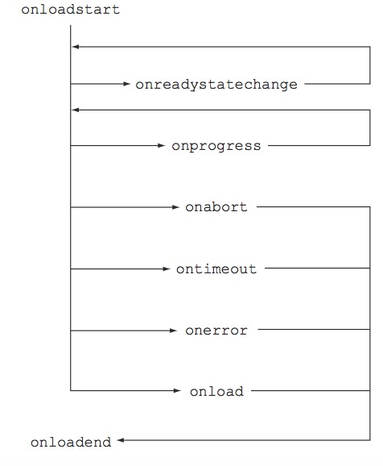

CORS(Cross-Origin Resource Sharing)是一种跨域技术，简单的说，就是在浏览器中，A网站是否可以对B网站发起HTTP请求。 CORS In Action这本书对CORS做了详细的介绍。
Hello CORS!
CORS is simply a way of making HTTP requests from one place to another. This is a trivial thing in other programming languages. But it’s difficult to do in client-side JavaScript, because for years the browser’s same-origin policy has explicitly prevented these types of requests.
Uncaught DOMException: Failed to execute 'setRequestHeader' on 'XMLHttpRequest': The object's state must be OPENED.
有特殊含义的请求头添加是无效的，即使添加上，也会被忽略:
Here is the list of headers that cannot be set by the setRequestHeader method: Accept-Charset, Accept-Encoding, Access-Control-Request-Headers, Access-ControlRequest-Method, Connection, Content-Length, Cookie, Cookie2, Date, DNT, Expect, Host, Keep-Alive, Origin, Referer, TE, Trailer, Transfer-Encoding, Upgrade, User-Agent, Via, and any headers starting with ‘Proxy-’ or ‘Sec-’. These headers have special meaning and can only be set by the browser. There is no error if the code tries to set the header. The value is just ignored.
Accept-Charset
Accept-Encoding
Access-Control-Request-Headers
Access-ControlRequest-Method,
Connection
Content-Length
Cookie
Cookie2
Date
DNT
Expect
Host
Keep-Alive
Origin
Referer
TE
Trailer
Transfer-Encoding
Upgrade
User-Agent
Via
Proxy-*
Sec-*
这些HTTP请求头有着特殊的含义，只能由浏览器本身添加，即便在代码中添加，也不会生效。
2.timeout参数
Once the send method is called, the HTTP request is sent to the server. Even though the request has been sent, there are still a couple of ways to cancel the request. First, the timeout property can be used to ensure that the request doesn’t exceed a certain number of milliseconds. Setting the timeout property to 10000 will kill the request after 10 seconds. The default value for the timeout property is 0, which means there is no timeout, and the request will continue until the server responds. Second, the client can manually kill the request by using the abort method. Calling the abort method will abort the request immediately.
By default, the XMLHttpRequest object makes asynchronous requests. This means that the send method makes the request in the background, and fires events when the status of the request changes. The XMLHttpRequest object can also make synchronous requests. In a synchronous request, the send method will wait until the response is received (or an error is encountered).
Fires when the request has been aborted by calling the abort method.
onerror
Fires when the request has failed.
onload
Fires when the request has successfully completed.
ontimeout
Fires when the timeout has been exceeded (if the client code specified a timeout value).
onloadend
Fires when the request has completed, regardless of whether there was an error or not.
onreadystatechange
Legacy handler from the previous version of XMLHttpRequest; fires when legacy readyState property changes. It is superseded by other events and is only useful for non-tier 1 browsers.
有些事件可能只会触发一次，有些可能触发多次，如下图，来自原书。

5.XMLHttpRequest响应对象的属性表
属性名称
说明
status
The HTTP status code (for example, 200 for a successful request).
statusText
The response string returned by the server (for example, OK for a successful request).
response
The body of the response, in the format defined by responseType. If the client indicated that the response type is json, the response will be a JSON object parsed from the response body.
responseText
The body of the response as a string. Can only be used if responseType was not set or was set as text.
responseXML
The body of the response as a DOM element (XML is here for historical reasons). Can only be used if responseType was not set or was set as document.
The browser asks for permissions by using what is called a preflight request. A preflight request is a small request that is sent by the browser before the actual request. It contains information like which HTTP method is used, as well as if any custom HTTP headers are present. The preflight gives the server a chance to examine what the actual request will look like before it’s made. The server can then indicate whether the browser should send the actual request, or return an error to the client without sending the request.
The concept of a preflight was introduced to allow cross-origin requests to be made without breaking existing servers that depend on the browser’s same-origin policy. If the preflight hits a server that is CORS-enabled, the server knows what a preflight request is and can respond appropriately. But if the preflight hits a server that doesn’t know or doesn’t care about CORS, the server won’t send the correct preflight response, and the actual request will never be sent. The preflight protects unsuspecting servers from receiving cross-origin requests they may not want.
>A preflight request must be made via the HTTP OPTIONS method, which is defined by the HTTP spec and isn’t specific to CORS. The HTTP spec (RFC2616) defines an OPTIONS request as “a request for information about the communication options available on the request/response chain.” This means that even before CORS, clients could use the OPTIONS method to learn more about an endpoint. When used outside of CORS, the OPTIONS method traditionally conveys which HTTP methods are supported on a particular URL.